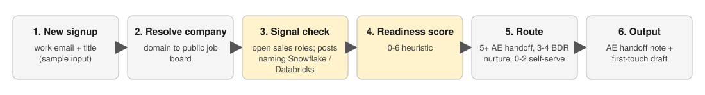

Signup-to-AE handoff workflow for Sumble
Built by Gursimar Singh, Nov 2026, on real public data
The BDR role owns spotting which self-serve users are ready for a sales conversation. I ran 20 sample signups from real companies through a public signal check. Sumble's Enterprise plan lists Snowflake and Databricks data integrations, so a signup whose company hires around those tools gets a handoff note that leads with that.

The 20 signups are sample input I made up: real public companies with an invented signup title. The signal columns are real, pulled from each company's public job board on Nov 22, 2026. The readiness score is my own heuristic: sales roles open (5-19 = 1, 20+ = 2), posts naming Snowflake or Databricks (1-4 = 1, 5+ = 2), 50+ open posts (1), seller or RevOps signup title (1).
| signup_id | Signup (sample) | Sales roles open | Snowflake/Databricks posts | Score | Route | Example post |
|---|---|---|---|---|---|---|
| S01 | Samsara / RevOps Manager | 80 | 20 | 6/6 | AE handoff | Sr. Project/Program Manager II |
| S02 | Brex / Account Executive | 26 | 20 | 6/6 | AE handoff | Screening & Transaction Monitoring Associate |
| S03 | Okta / SDR | 58 | 17 | 6/6 | AE handoff | Senior Software Engineer, Data Platform |
| S04 | Toast / Sales Manager | 196 | 9 | 6/6 | AE handoff | Data Engineer |
| S05 | Ramp / Account Executive | 33 | 8 | 6/6 | AE handoff | GTM Senior Business Systems Analyst, Marketing & Pre-Sales |
| S06 | Block / Data Analyst | 70 | 17 | 5/6 | AE handoff | Quality Program Manager, Globalization |
| S07 | Harvey / SDR | 44 | 10 | 6/6 | AE handoff | Technical CX Specialist, EMEA |
| S08 | Asana / Marketing Ops | 10 | 6 | 4/6 | BDR nurture | Senior Analyst, Channel Strategy & Operations |
| S09 | Smartsheet / RevOps Manager | 11 | 12 | 5/6 | AE handoff | Director, Finance Systems & ERP |
| S10 | Notion / Product Manager | 15 | 3 | 3/6 | BDR nurture | Business Systems Engineer |
| S11 | Vanta / Account Executive | 22 | 1 | 5/6 | AE handoff | Program Manager, Digital Customer Success |
| S12 | Gong / SDR | 31 | 2 | 5/6 | AE handoff | Manager, Center of Excellence |
| S13 | Twilio / Solutions Engineer | 32 | 2 | 4/6 | BDR nurture | Technical Support Expert 2 |
| S14 | Cursor / Account Executive | 27 | 2 | 5/6 | AE handoff | Community Operations Lead |
| S15 | Justworks / RevOps Manager | 12 | 6 | 5/6 | AE handoff | Associate GTM Engineer |
| S16 | Chime / Data Analyst | 0 | 10 | 3/6 | BDR nurture | Senior Infrastructure Security Engineer |
| S17 | Mercury / Founder office / BizOps | 3 | 3 | 2/6 | Self-serve | Senior Engineering Manager - GTM |
| S18 | Linear / Software Engineer | 4 | 1 | 1/6 | Self-serve | Analytics Engineer |
| S19 | Writer / SDR | 9 | 0 | 2/6 | Self-serve | Strategic account executive, healthcare & life sciences (UK) |
| S20 | Discord / Marketing Ops | 2 | 0 | 0/6 | Self-serve | Account Executive, Media & Entertainment |
AE handoff note: Samsara signup (RevOps Manager, sample). 80 open sales roles, newest: Account Executive, Mid-Market - DACH. 20 open posts mention Databricks / Snowflake, e.g. Sr. Project/Program Manager II. Score 6/6 -> AE handoff. Lead with the Enterprise Snowflake/Databricks data integration.
First-touch draft: Hi {first_name}, saw you started a Sumble trial. Samsara has 80 sales roles open right now and the data team works in Databricks and Snowflake. Worth 20 minutes with our AE on getting Sumble signals to the whole team and into your warehouse?
Evidence quote: "ERP such as SAP or Oracle Familiarity with Salesforce, Vertex, and Databricks Experience in revenue accounting, order-to-cash," (Sr. Project/Program Manager II)
What I'd improve next: Swap the job-board check for Sumble's own API (teams, tech and projects per account), add in-product usage like searches and saved signals to the score, and post the handoff note into the AE's Slack channel with the draft ready to edit.